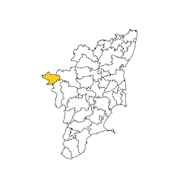

Ooty The Queen of Hill Stations: Imagine being admist the best of natural settings, trying out adventurous sports and spending some relaxed time with your loved ones all at one place. You can do all these and much more at Ooty, the "Queen of Hill Stations". The hill station presents a picture of perfect vacation that we all dream of. With mesmerising scenery, breathtaking tea gardens, fine pine and eucalyptus trees along with magnificent mountains around, Ooty tour offers a refreshing setting to speand few special days of your life. Trip to Ooty makes for a complete tour package with excellent accommodation facilities, well connectivity with rest of the country along with a pleasant atmosphere

25 °C
